§030 秒速覽
四個數字抓骨架：真機大勝、code 專家是關鍵、模擬有破口、代價很小
§1問題：會想像未來的模型，不會「分步驟」
WAM 有物理預見、沒有技能結構；agentic 系統剛好相反
世界動作模型（World Action Model, WAM）把影片預測和動作生成綁在一起，代表作有 DreamZero、Cosmos Policy。好處是動作有「物理預見」：物體會怎麼動、會在哪裡接觸、這個動作的後果是什麼，模型都先想像過。對接觸密集的操作特別有用。論文指出它的缺口：預測出來的影片和動作塊（action chunk：一次生成、接著連續執行的一段動作），本身不說明長任務該怎麼拆，不會說要呼叫哪個技能、參數多少、子任務之間怎麼串。另外，「要把世界模型化到多細」沒有明確邊界，算起來也貴。
agentic 機器人是另一條路線，從 Code-as-Policies（CaP）一路到 CaP-X，以及本站讀過的 ASPIRE。這類系統讓語言模型寫程式：選技能、把技能綁到眼前的場景、追蹤進度、看情況重新規劃。多步任務的結構因此一目了然。但它沒有學到「世界接下來會怎麼變」，而且 agent 是在 policy 外面呼叫 API，能力上限就是那組 primitive 能做到的事。
論文挑了四個基線；下表「它代表的假設」一欄是本站依論文描述歸納的：
| 方法 | 類型 | 它代表的假設 | 重現方式（附錄 C） |
|---|---|---|---|
| π0.5 | VLA | 語意推理強的 VLA，不必想像未來 | 官方 OpenPI、π0.5 預訓練權重，每任務微調 50 epoch |
| EgoScale | VLA＋大量人類第一人稱影片預訓練 | 人類影片的規模能遷移到靈巧操作 | GR00T N1.7-3B 權重，VLM 凍結，微調 50 epoch |
| DreamZero | WAM | 影片＋動作聯合生成，靠物理預見取勝 | DreamZero-AgiBot 權重，三視角拼成一張圖，微調 10 epoch |
| WLA | WAM＋語言子任務 | 計畫用自然語言寫，自迴歸地依序生成子任務文字、子目標影像、動作 | RynnBrain-2B＋Sana-600M，微調 50 epoch |
| AW-0 | WAM＋code | 計畫用程式寫，與影片、動作平行地一起去噪 | 自家 2,913 小時預訓練，下游每任務微調 20 epoch |
WLA 是最該對照的一個：它同樣在 WAM 裡加入「計畫」，只是計畫寫成文字、而且自迴歸地先寫完。AW-0 有兩處不同：計畫的形式是程式，生成方式是聯合去噪。這兩個差異在 §8 的消融各自被檢驗。
§2架構：三個專家、一次聯合去噪
Mixture-of-Transformers＋離散遮罩擴散（code）＋連續 flow matching（影片、動作）
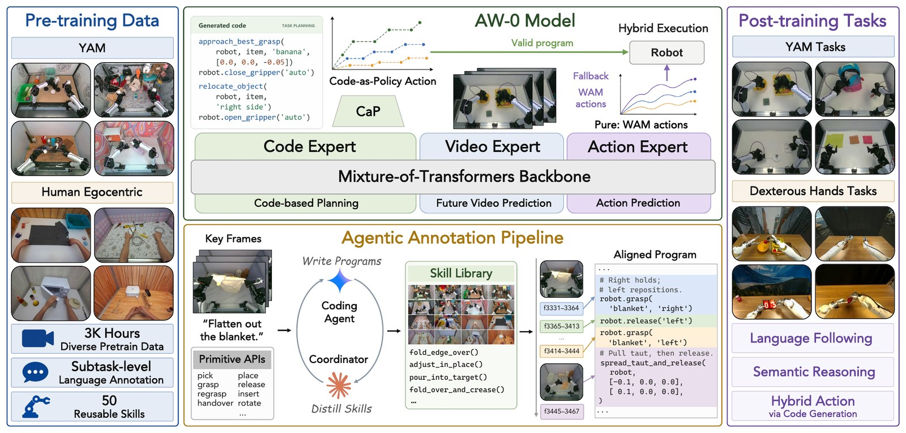
AW-0 把問題寫成一個條件生成模型 p(C₀, Z₀, A₀ | 𝒞ₜ)，同時生成三樣東西：
- C₀：一段技能程式，離散 token 序列，例如
approach_best_grasp(robot, 'pear', ...)。 - Z₀：未來影片，由預訓練 VAE 編碼的連續潛在變數。
- A₀：動作塊，未來 H=32 步的連續控制指令。
條件 𝒞ₜ = {𝒪ₜ, L, Sₜ, Mₜ} 包含：目前的多視角影像、語言指令、機器人狀態，以及一份壓縮過的記憶（這一集到目前為止已經寫過的程式片段）。
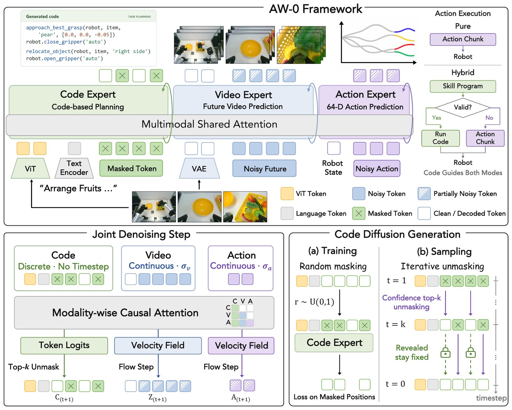
三個專家各自是什麼
MoT 的意思是：每個專家有自己的注意力投影（WQ、WK、WV、WO）、LayerNorm 和 FFN，只在每一層的聯合注意力裡交換資訊。三個專家都是 28 層，共用 2,048 維的注意力空間（16 個 head × 128）。
| 專家 | 骨幹／初始化 | 殘差／FFN 寬 | 凍結與訓練 | 產出 |
|---|---|---|---|---|
| Code | SDAR-1.7B 語言模型（LLaDA 式遮罩擴散）＋Qwen3-VL-2B 視覺塔 | 2,048 / 6,144 | 詞嵌入、LayerNorm、FFN、詞表頭全凍結，只訓練 MoT 注意力投影與調變參數；視覺塔凍結，訓練一個把視覺特徵接到 code 嵌入的 merger | 128 個 code 位置的 token logits |
| 影片 | Cosmos-Predict2.5-2B 影片 DiT；VAE 換成 Wan2.2（48 通道，凍結） | 2,048 / 8,192 | 換了 VAE，所以輸入／輸出投影重新初始化；多視角 3D RoPE | 9 幀（時間偏移 0, 4, …, 32；第 1 幀是觀測條件，其餘 8 幀為未來）經 VAE 編碼後的潛在變數速度場 |
| 動作 | 從零訓練的 Action DiT | 1,024 / 4,096 | 全部訓練；狀態／動作維度改變時（如 RoboTwin 的 14 維）重設狀態與動作投影 | 32 步動作塊的速度場 |
Code 專家會直接看圖：三個視角各縮到 224×320，每個視角合併成 70 個視覺 token，共 210 個，放在指令與程式 token 前面。影片和動作專家則透過 cross-attention 讀取預先算好的 Cosmos-Reason1 語言嵌入，動作專家另外讀取機器人狀態。
注意力順序：code → 影片 → 動作
同一個專家內部的 token 用雙向注意力；跨專家時按 code、影片、動作的順序分塊因果：影片讀得到 code，動作讀得到 code 和影片，反過來則讀不到。這個順序是全篇的關鍵設計，§8 的消融支持這一點：同樣有 code，把順序改成「影片先、code 後」，平均分數從 71.1 掉到 48.3（本站依論文圖 5 計算）。
聯合去噪：code 不是先寫完才輪到影片
三種模態用不同的方式加雜訊。影片和動作是連續值，用 flow matching：X_σ = (1−σ)X₀ + σε，模型回歸速度 ε − X₀。雜訊等級 σ 由 u 經過位移函數 σ = γu / (1+(γ−1)u)（γ=5）得到，這個函數會把取樣推向高雜訊端。Code 是離散 token，用 吸收式遮罩擴散（LLaDA 那一派）：先抽遮罩比例 r ~ U(0,1)，每個 token 各以機率 r 被換成 [MASK]，模型只在被遮的位置算交叉熵。訓練時三種模態的雜訊等級各自獨立抽樣，觀測幀、視覺前綴和指令則不加雜訊。
推理時，每個重規劃點會重建 prompt，接上 G=128 個遮罩 token 當「畫布」，然後與影片、動作一起跑 T=4 步聯合去噪。每一步，code 專家對所有還被遮著的位置預測 logits，確定其中信心最高的 G/T=32 個，確定後就固定不改；影片用 UniPC、動作用 Euler 各走一步。
雜訊重取樣：讓影片特徵對動作「有用」
這段解決一個不太明顯的問題。影片專家繼承了 Cosmos 的預訓練雜訊分佈：u = 0.999·b，b ~ Beta(7,1)，幾乎所有樣本都落在高雜訊端。這對學會「從雜訊生成影片」沒問題，但動作專家會讀取影片專家的中間表徵。論文原文只說這是為了「給動作預測更有資訊的影片特徵」；本站的解讀是：高雜訊下未來幀幾乎還沒成形（觀測幀本身不加噪），能提供給動作的「預測性」資訊有限，若訓練時幾乎只看到這種狀態，動作專家就學不到怎麼利用較清楚的未來特徵。
AW-0 的作法是：取樣時改用混合分佈 q = α·p_pre + (1−α)·U(0,1)（α=0.5），再用兩組重要性權重分別校正影片目標與動作／code 目標。影片損失乘上 w_v = p_pre / q，讓影片目標在期望上仍按原本 Cosmos 的雜訊分佈加權（近似成立，因為權重有做批次正規化），不因混入均勻分佈而改變影片學習的重點；論文的說法是用這組權重「平衡影片學習與預測引導」。動作與 code 損失乘上 w_g = U / q，相當於在均勻分佈上學，各種雜訊等級的影片特徵都練到。權重設了 4.0 的上限，再正規化成批次平均為 1；不過 α=0.5 時 w_v 最大約 1.75、w_g 最大 2，上限實際上不會觸發（本站計算）。三項損失的權重是（影片 1、code 0.5、動作 1）。
記憶快取：單張畫面看不出進度
只看當下一張圖，模型常常分不清任務做到哪一步：毛巾摺好一條還是兩條？牌發出去了沒？所以 code 專家會拿到一份「這一集到目前為止寫過的程式片段」，壓縮成 K 個可學習的記憶槽，放在 code 流的 prompt 前面。訓練時，記憶裡放的是標註好的前幾段，但會以機率 p 換成模型自己預測的版本，讓模型習慣「記憶可能有錯」。推理時每一集開頭清空，之後每解出一段就加一段進去。（論文沒有報告 K 和 p 的數值。）
§3Code 長什麼樣、從哪來：自動標註管線
宣告式 API → coding agent 寫、coordinator 審 → 凍結技能庫 → 驗證過才重用快取
宣告式 API：只宣告、不執行
標註用的 API 是 declaration-only：只有宣告、沒有實作，任何呼叫都不會真的執行；但每個呼叫都宣告自己會產生哪些接觸事件（哪隻手依序開、合），程式因此能與示範對齊（附錄 K）。在 YAM 上，這是逐一比對夾爪感測器記錄的開合事件；人類影片沒有事件清單，接觸由 annotator 從畫面推斷。（本站的理解：遙控收來的真機資料沒有環境可以執行候選程式來驗證，所以改成比對事件。論文正式版沒有明寫這個動機。）
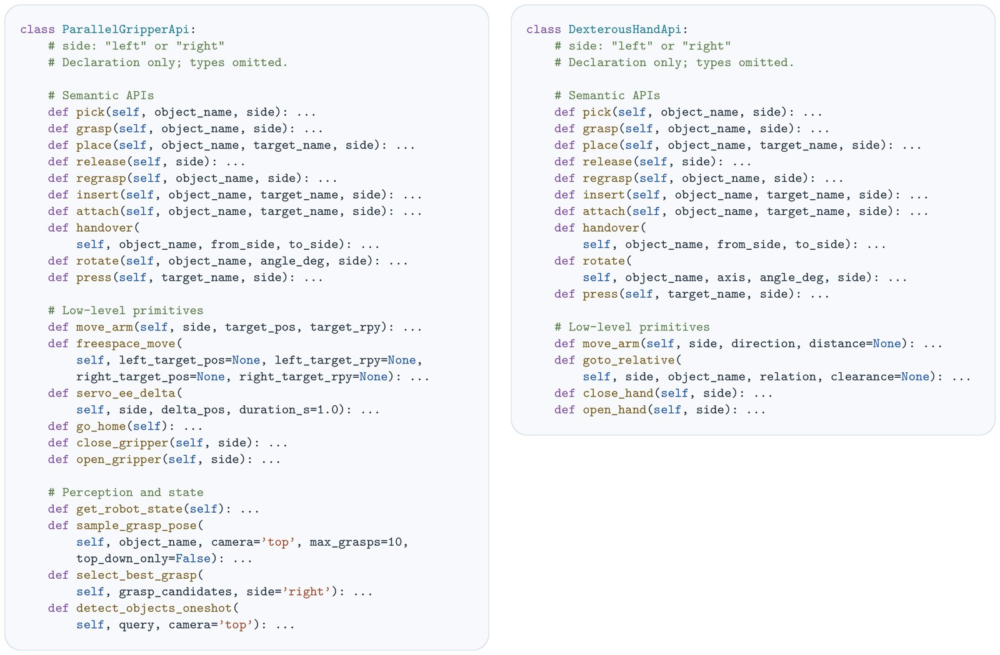
move_arm 帶目標位置與 rpy、servo_ee_delta、freespace_move）加感知函式（sample_grasp_pose、detect_objects_oneshot）；靈巧手的手臂移動只有語意化的相對動作（沿某方向 move_arm、goto_relative 到某物體的某種相對位置），另有 close_hand／open_hand，沒有感知函式。程式不只是一串動作清單，也承載控制邏輯：迴圈、條件判斷、計數。下面兩個是論文附錄的標註範例，每個顏色區塊對應一段影格範圍：
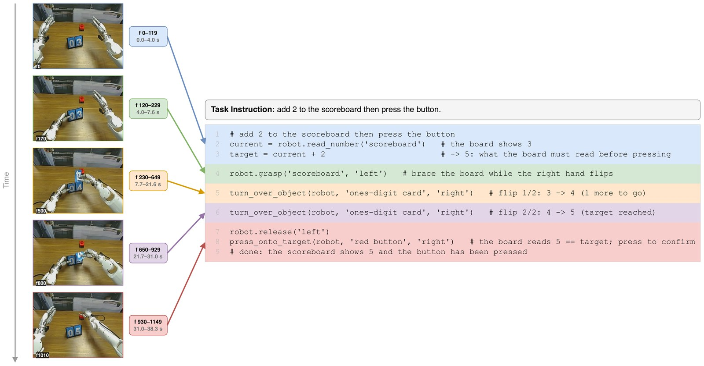
target = current + 2，接著左手扶板，右手呼叫兩次 turn_over_object（註解寫明 3→4、4→5），最後按紅色按鈕。「數到幾次」寫在程式裡。論文認為這類計數邏輯是 §7 這個任務大幅領先的原因之一，屬推論、未直接驗證。注意這是訓練示範的標註，不是模型輸出。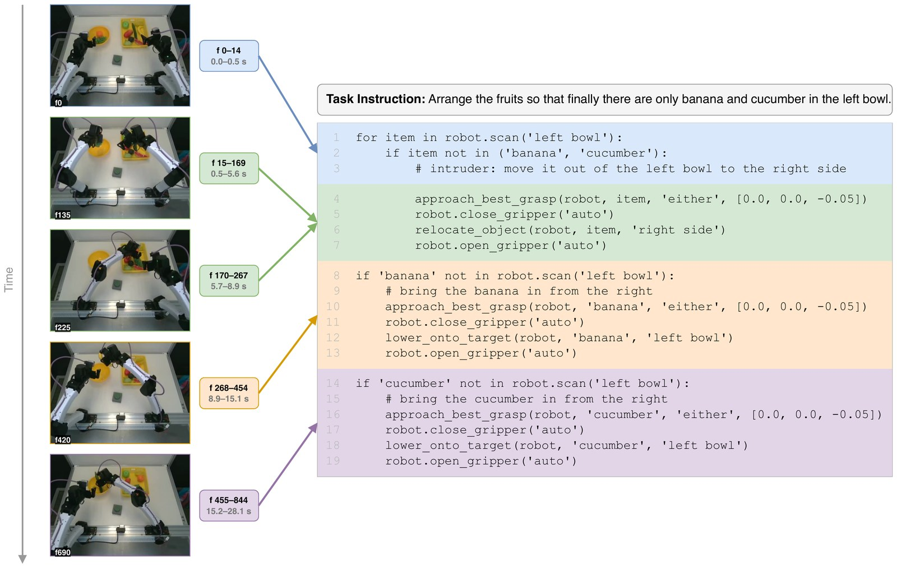
for item in robot.scan('left bowl') 把不屬於指令的水果移出去，接著兩個 if ... not in 判斷要不要補香蕉、補小黃瓜。這類「依指令挑物體」的語意判斷寫成程式後一目了然。robot.read_number、robot.scan 這些呼叫從頭到尾沒有被執行。模型只是「寫出」這段計畫，讓影片與動作專家透過注意力讀它。程式在這裡的角色比較像結構化的思考鏈，而不是控制器。
三階段標註：一個寫、一個審，凍結後才量產
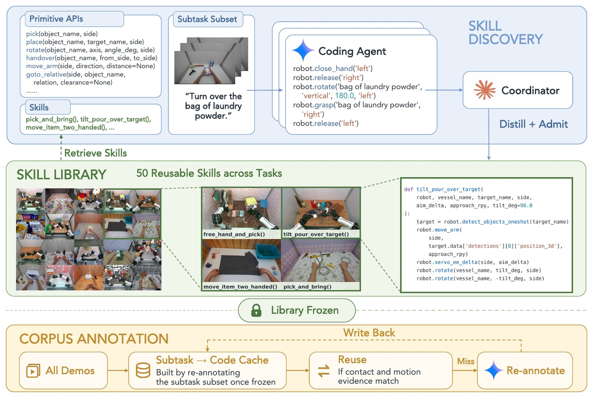
tilt_pour_over_target 的實作。下：技能庫凍結後標註整個語料，接觸與運動證據相符就重用快取，不符才重新呼叫模型並寫回。- 技能發現（第 1 階段）。每個任務抽一集，由 Gemini 3.1 Pro 擔任 annotator，對著宣告式 API 寫子任務層級的程式。Claude Code（Claude Opus 4.8）擔任 coordinator，每一輪之間按固定書面協定審核，把有問題的片段分成五類：偵測器限制、annotator 看錯、抽象層級錯、詞彙缺口、切段瑕疵。只有「詞彙缺口」會變成技能提案。候選技能要同時符合四個條件才收錄：泛用（把單集特有的數值提成參數）、在至少兩個不同任務重複出現、層級是「一個動作招式」而不是「整個任務食譜」、不與既有技能重複。每個技能另外要推導出自己的接觸契約。coordinator 不寫程式，也不能改 annotator、prompt、API 或驗證程式。
- 凍結重標（第 2 階段）。技能庫凍結，用最終詞彙把第 1 階段的樣本重標一次，建立「子任務 → 程式」的快取。
- 量產（第 3 階段）。其餘語料先查快取，證據相符才重用。YAM 的標準是：程式隱含的接觸事件與夾爪感測器記錄的事件完全一致（允許左右鏡像，運動參數重新推導）。人類影片的標準是：手部運動軌跡輪廓與新片段的距離在固定閾值內，且迴圈模板永不重用。快取沒命中才呼叫 annotator，結果寫回快取。下游任務的 100 條示範也用同一條管線、在凍結的技能庫下標上程式再拿去微調；annotator 不能新增技能名稱，技能庫沒涵蓋的動作只能用 primitive 寫。
每段程式都要通過靜態檢查：程式脈絡下的語法、呼叫的函式是否存在、參數綁定、字面值是否屬於詞彙表。沒過的話，annotator 會看到自己的輸出和問題清單並重寫。YAM 的 prompt 還有一條硬規則：感測器記到的夾爪開合事件是權威答案，程式必須依序重現每一次開合，不能增加、刪除或調換順序。
| 預訓練語料（附錄 B） | YAM 機器人 | 人類第一人稱 | 合計 |
|---|---|---|---|
| 集數 | 73,101 | 175,541 | 248,642 |
| 時數 | 1,919.3 h | 993.9 h | 2,913.2 h |
| 任務數 | 279 | 327 | 606 |
| 子任務片段 | 986,314 | 1,089,059 | 2,075,373 |
| 每集平均片段數 | 13.5 | 6.2 | 8.3 |
| 凍結技能庫 | 23 個 | 27 個 | 50 個 |
YAM 以 30 Hz 錄製左腕、右腕、頂視三路影像；人類影片只有一路頭戴相機（複製到三個輸入槽），手部動作重定向成每手 22 自由度的靈巧手關節目標。
技能庫長什麼樣？挑幾個看看：
| 技能 | 來源 | 做什麼 |
|---|---|---|
fold_edge_over | YAM | 雙臂捏住布邊、帶過去、放開：一次對摺 |
approach_best_grasp | YAM | 取樣抓取候選，選這隻手搆得到的最佳一個並移過去 |
ratchet_twist_off | YAM | 對螺紋件做兩次棘輪式轉動，角度正負決定鎖緊或鬆開 |
run_zipper_along_seam | YAM | 一手壓住包，一手拉拉鍊沿縫走一段 |
stir_contents | 人類 | 把已拿在手上的工具放進容器裡繞圈攪拌 |
pour_into_target | 人類 | 把容器口移到目標上方，傾倒到空，再扶正，握法不變 |
scoop_and_carry | 人類 | 用手上的器具從來源容器舀一份，帶到目的地上方 |
thread_through_and_pull_out | 人類 | 一手把繩、帶、針穿過孔，另一手接住穿出的一端拉過去 |
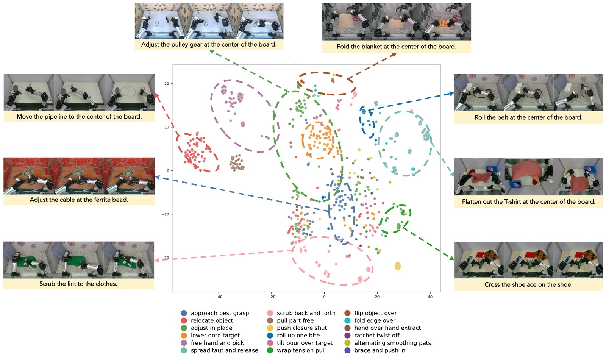
§4混合執行：程式什麼時候真的會被跑
同一次前向傳遞同時給出動作塊和程式片段，由仲裁器決定這一段由誰驅動機器人
預設模式下，code 只是條件，機器人執行的是動作專家產出的動作塊。論文另外探索了混合模式：在每個重規劃點，把解出來的程式片段像 Code-as-Policies 那樣，對一組感知與控制 primitive 真的執行；不能執行時，就用同一次前向傳遞產出的動作塊。仲裁規則（附錄 I）如下：
模擬裡，程式透過一組感知與控制 primitive 執行：Molmo 做開放詞彙定位、SAM 3 做分割、Contact-GraspNet 產生抓取、RoboTwin 原生的運動規劃與夾爪控制。評估時程式和 primitive 都不讀模擬器的特權資訊；收示範資料時則用了特權物體狀態與標註好的抓取點，以提高收集效率。
§5實驗設定：一個模擬基準、兩種真機
RoboTwin 2.0 的 50 個任務；YAM 平行夾爪與 Tianji–Sharpa 靈巧手各 4 個任務
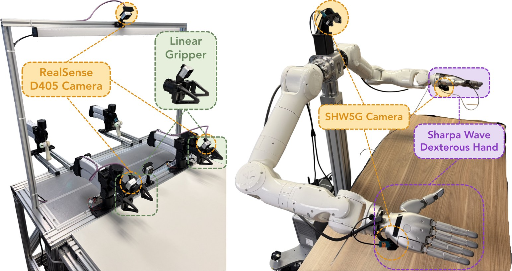
遙控收資料：YAM 用標準的主從臂，操作員動主臂，關節角直接當從臂的目標，手把扳機控制夾爪。Tianji–Sharpa 用 Manus 手套，手套上掛 PICO 追蹤器，操作員脖子上掛一台 Apple Vision Pro；手腕位姿對應到手臂末端，手指動作重定向成 22 維關節目標。
| RoboTwin 2.0（模擬） | 真機 | |
|---|---|---|
| 訓練資料 | 每任務 50 條乾淨示範（官方排行榜規定），50 任務共 2,500 條，每個方法訓練一個多任務 policy | 每任務 100 條示範，每個方法每任務各訓一個 policy；AW-0 微調 20 epoch |
| 評估 | Clean（乾淨桌面、固定光照、無干擾物）與 Random（背景、桌面材質、光照、桌高、干擾物全隨機），每任務每設定 50 次 | 3 個訓練種子 × 每種子 16 次 = 每任務 48 次，物體初始位姿隨機 |
| 指標 | 成功率 | 加總式 rubric 分數：每完成一個子步驟拿部分分數（附錄 E） |
Rubric 的例子：Flip Scoreboard 扶住板子 0.1、翻成功一張 0.2、剛好翻 k 次 0.4、放開 0.1、在正確分數時按按鈕 0.2。Replace Lightbulb 分兩種條件：燈泡壞了就要拆掉換新的；燈泡是好的，按開關看到亮就該收手不動，收手這一項佔 0.7。Solve Rubik's Cube 每次只隨機轉亂一面的一個四分之一圈，所以「解」等於轉回那一下。因此 rubric 分數不等於成功率，71.1 分不代表 71% 的成功率。
§6模擬結果：乾淨場景大勝，隨機化露出破口
RoboTwin 2.0 的 50 個雙臂任務，每任務 50 次評估
| 方法 | Clean | Random | 平均 |
|---|---|---|---|
| π0.5 | 54.9 | 27.7 | 41.3 |
| DreamZero | 33.6 | 17.6 | 25.6 |
| EgoScale | 26.2 | 2.9 | 14.5 |
| WLA | 64.8 | 3.6 | 34.2 |
| AW-0 | 80.8 | 20.6 | 50.7 |
| AW-0（混合） | 63.1 | 29.2 | 46.2 |
論文表 1。成功率（%），50 個任務 × 每任務 50 次的平均。
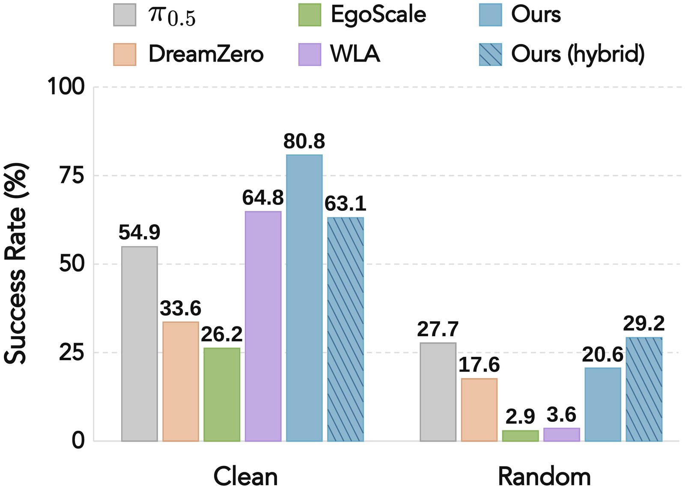
論文的讀法：兩種推理模式互補。預設模式的優勢幾乎都來自 Clean，80.8% 比 WLA 高 16.0 個百分點。到了 Random 就掉到 20.6%，論文認為這與先前研究指出的像素層級分佈外預測難題一致；這個數字輸給 π0.5（27.7%），但仍贏過最強的 WAM 基線 DreamZero（17.6%）。混合模式在 Random 拿到 29.2%，是全場最高；代價是 Clean 掉到 63.1%，比預設模式少 17.7 個百分點。
混合模式不是全面更好：逐任務看
我們從附錄的 50 任務逐項表（論文表 11）重算，混合模式對預設模式的勝負如下：
- Clean：混合贏 14 個、平 1 個、輸 35 個。輸最多的是 Handover Block（82→4）、Put Bottles Dustbin（86→14）、Place Bread Skillet（90→24）、Handover Mic（98→34）、Place Dual Shoes（64→2）。
- Random：混合贏 24 個、平 7 個、輸 19 個。贏最多的是 Stack Blocks Two（18→82）、Press Stapler（8→68）、Place A2B Right（26→80）、Click Bell（18→72）、Blocks Ranking RGB／Size（各 +50）。
- Random 設定下，AW-0 預設模式只在 20 個任務贏過 π0.5，混合模式 25 個，剛好一半。
大致傾向（本站觀察，非論文結論）：按順序排方塊、A 放到 B 這類結構化取放，在 Random 下混合模式明顯較好；交接類與部分不規則物體（交接方塊、交接麥克風、擺鞋）在 Clean 下大幅掉分。但反例不少：Stack Blocks Three（Clean 92→62）、Stack Bowls Two／Three（98→52、78→44）同屬規則物體卻掉分，不規則的 Pick Dual Bottles 反而 80→96。混合模式連訓練示範都不同（§4），論文也沒有給逐任務的程式執行佔比，無法斷定掉分就是「交給程式」造成的。論文對 Clean 掉分的解釋是：code 這條路會繼承底層感知與控制 primitive 的失敗模式，而仲裁器只看程式「有效」就放行，不會預測它是否比被取代的動作塊更好。
| 設定 | 集合 | Code 執行步數佔比 | 直接動作佔比 | 每集平均步數 |
|---|---|---|---|---|
| Clean | 全部 | 8.5% | 91.5% | 26,720 |
| 成功集 | 14.5% | 85.5% | 11,549 | |
| 失敗集 | 6.3% | 93.7% | 52,687 | |
| Random | 全部 | 5.6% | 94.4% | 41,716 |
| 成功集 | 35.0% | 65.0% | 8,400 | |
| 失敗集 | 3.7% | 96.3% | 55,483 |
論文附錄 J 表 12。失敗集會跑到步數上限，步數約是成功集的 5 倍，而且幾乎全是直接動作，所以「全部」那一列被失敗集稀釋了。
在 Random 的成功集裡，程式負責了三分之一的物理時間：學出來的動作在視覺分佈外不可靠時，程式這條路就補上來。
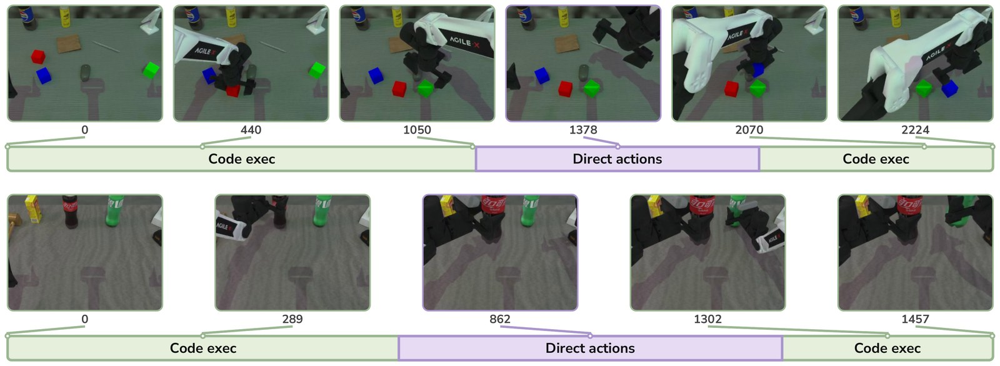
blocks_ranking_rgb（按紅、綠、藍排方塊）。論文說三輪取放「幾乎全由程式完成」、直接動作只在階段交界接手；但從圖上的進度條量，中段那次交界的直接動作約佔全集三成步數，程式約七成。下：pick_dual_bottles，程式找到瓶子、把夾爪帶過去，但瓶子形狀不規則，抓不牢；直接動作接手完成抓取後，程式再接回來收尾。展開：RoboTwin 2.0 的 50 個任務逐項成功率（論文表 11，可點欄位標題排序）
| 任務 | π0.5 C | π0.5 R | Ego C | Ego R | DZ C | DZ R | WLA C | WLA R | AW-0 C | AW-0 R | 混合 C | 混合 R | 混合−預設 R |
|---|---|---|---|---|---|---|---|---|---|---|---|---|---|
| Adjust Bottle | 62 | 18 | 26 | 0 | 0 | 6 | 100 | 0 | 100 | 50 | 90 | 48 | -2 |
| Beat Block Hammer | 48 | 16 | 22 | 0 | 26 | 12 | 82 | 0 | 94 | 28 | 46 | 24 | -4 |
| Blocks Ranking RGB | 74 | 16 | 0 | 0 | 0 | 0 | 54 | 0 | 96 | 32 | 94 | 82 | +50 |
| Blocks Ranking Size | 32 | 0 | 0 | 0 | 16 | 0 | 32 | 0 | 56 | 0 | 64 | 50 | +50 |
| Click Alarmclock | 44 | 56 | 88 | 16 | 100 | 24 | 100 | 42 | 96 | 56 | 100 | 62 | +6 |
| Click Bell | 32 | 40 | 92 | 36 | 100 | 66 | 100 | 48 | 96 | 18 | 100 | 72 | +54 |
| Dump Bin Bigbin | 72 | 70 | 32 | 18 | 0 | 0 | 100 | 12 | 98 | 20 | 78 | 14 | -6 |
| Grab Roller | 94 | 46 | 96 | 6 | 64 | 22 | 100 | 0 | 100 | 32 | 92 | 50 | +18 |
| Handover Block | 16 | 0 | 4 | 0 | 0 | 0 | 8 | 0 | 82 | 0 | 4 | 0 | +0 |
| Handover Mic | 26 | 4 | 0 | 0 | 16 | 0 | 68 | 0 | 98 | 12 | 34 | 2 | -10 |
| Hanging Mug | 10 | 4 | 0 | 0 | 0 | 0 | 8 | 0 | 30 | 0 | 2 | 0 | +0 |
| Lift Pot | 8 | 2 | 0 | 0 | 8 | 0 | 88 | 0 | 90 | 4 | 66 | 0 | -4 |
| Move Can Pot | 28 | 0 | 24 | 0 | 4 | 4 | 64 | 0 | 76 | 6 | 82 | 52 | +46 |
| Move Pillbottle Pad | 60 | 44 | 36 | 0 | 34 | 16 | 72 | 0 | 92 | 6 | 96 | 6 | +0 |
| Move Playingcard Away | 90 | 52 | 46 | 0 | 0 | 4 | 94 | 0 | 100 | 46 | 86 | 30 | -16 |
| Move Stapler Pad | 22 | 6 | 0 | 0 | 0 | 0 | 2 | 0 | 38 | 0 | 26 | 2 | +2 |
| Open Laptop | 68 | 20 | 20 | 0 | 66 | 22 | 90 | 0 | 84 | 38 | 72 | 48 | +10 |
| Open Microwave | 26 | 8 | 8 | 2 | 12 | 8 | 0 | 0 | 20 | 4 | 46 | 24 | +20 |
| Pick Diverse Bottles | 56 | 18 | 44 | 0 | 40 | 16 | 76 | 12 | 76 | 36 | 74 | 32 | -4 |
| Pick Dual Bottles | 82 | 14 | 38 | 4 | 54 | 42 | 80 | 0 | 80 | 28 | 96 | 28 | +0 |
| Place A2B Left | 60 | 10 | 0 | 0 | 22 | 14 | 48 | 0 | 84 | 30 | 98 | 58 | +28 |
| Place A2B Right | 58 | 14 | 4 | 0 | 24 | 8 | 54 | 0 | 80 | 26 | 96 | 80 | +54 |
| Place Bread Basket | 68 | 44 | 44 | 0 | 62 | 12 | 84 | 0 | 92 | 20 | 80 | 6 | -14 |
| Place Bread Skillet | 86 | 46 | 32 | 0 | 36 | 34 | 64 | 0 | 90 | 14 | 24 | 2 | -12 |
| Place Burger Fries | 90 | 78 | 78 | 0 | 70 | 62 | 100 | 0 | 94 | 20 | 66 | 22 | +2 |
| Place Can Basket | 40 | 0 | 6 | 0 | 26 | 12 | 42 | 6 | 70 | 8 | 26 | 8 | +0 |
| Place Cans Plasticbox | 94 | 74 | 40 | 0 | 0 | 12 | 100 | 0 | 98 | 12 | 80 | 34 | +22 |
| Place Container Plate | 96 | 58 | 46 | 0 | 96 | 44 | 100 | 0 | 94 | 26 | 86 | 22 | -4 |
| Place Dual Shoes | 54 | 12 | 8 | 0 | 20 | 0 | 32 | 0 | 64 | 12 | 2 | 2 | -10 |
| Place Empty Cup | 74 | 56 | 72 | 0 | 76 | 50 | 94 | 0 | 98 | 16 | 96 | 14 | -2 |
| Place Fan | 36 | 30 | 12 | 0 | 0 | 0 | 8 | 0 | 70 | 4 | 16 | 10 | +6 |
| Place Mouse Pad | 18 | 0 | 2 | 0 | 10 | 0 | 26 | 0 | 64 | 0 | 18 | 4 | +4 |
| Place Object Basket | 24 | 4 | 0 | 0 | 10 | 0 | 42 | 2 | 84 | 14 | 50 | 4 | -10 |
| Place Object Scale | 58 | 44 | 8 | 0 | 36 | 8 | 36 | 0 | 70 | 18 | 88 | 50 | +32 |
| Place Object Stand | 94 | 40 | 26 | 0 | 50 | 26 | 92 | 6 | 92 | 26 | 62 | 56 | +30 |
| Place Phone Stand | 40 | 4 | 8 | 0 | 22 | 0 | 86 | 0 | 90 | 22 | 82 | 54 | +32 |
| Place Shoe | 64 | 24 | 22 | 6 | 18 | 6 | 72 | 0 | 78 | 22 | 60 | 30 | +8 |
| Press Stapler | 42 | 32 | 100 | 20 | 88 | 44 | 82 | 0 | 86 | 8 | 100 | 68 | +60 |
| Put Bottles Dustbin | 14 | 2 | 0 | 0 | 4 | 6 | 16 | 0 | 86 | 12 | 14 | 0 | -12 |
| Put Object Cabinet | 22 | 0 | 12 | 0 | 4 | 0 | 68 | 0 | 56 | 6 | 66 | 0 | -6 |
| Rotate QRcode | 50 | 2 | 32 | 0 | 0 | 0 | 22 | 0 | 70 | 4 | 40 | 28 | +24 |
| Scan Object | 62 | 38 | 4 | 0 | 40 | 20 | 80 | 0 | 68 | 10 | 16 | 10 | +0 |
| Shake Bottle Horizontally | 98 | 74 | 72 | 30 | 100 | 86 | 100 | 26 | 100 | 62 | 100 | 26 | -36 |
| Shake Bottle | 96 | 72 | 80 | 6 | 100 | 76 | 100 | 24 | 100 | 58 | 94 | 30 | -28 |
| Stack Blocks Three | 68 | 16 | 0 | 0 | 10 | 0 | 12 | 0 | 92 | 18 | 62 | 56 | +38 |
| Stack Blocks Two | 80 | 56 | 6 | 0 | 58 | 46 | 90 | 0 | 70 | 18 | 80 | 82 | +64 |
| Stack Bowls Three | 38 | 36 | 0 | 0 | 14 | 14 | 88 | 0 | 78 | 40 | 44 | 4 | -36 |
| Stack Bowls Two | 82 | 44 | 0 | 0 | 88 | 24 | 100 | 0 | 98 | 56 | 52 | 44 | -12 |
| Stamp Seal | 32 | 2 | 6 | 0 | 40 | 16 | 40 | 0 | 78 | 2 | 58 | 4 | +2 |
| Turn Switch | 56 | 40 | 12 | 0 | 14 | 18 | 42 | 0 | 44 | 28 | 52 | 28 | +0 |
C＝Clean、R＝Random；綠字＝該任務該設定六個方法中最高（含並列）。最後一欄是混合模式減預設模式的 Random 成功率差（本站計算）。
§7真機結果：靈巧手那一側拉開最多
8 個任務 × 每任務 48 次，加總式 rubric 分數（%）
| 方法 | Arrange Fruits | Pack Backpack | Replace Lightbulb | Fold Towels | Fruits w/ Tong | Deal Poker | Flip Scoreboard | Solve Cube | 平均 |
|---|---|---|---|---|---|---|---|---|---|
| YAM（平行夾爪） | Tianji–Sharpa（靈巧手） | ||||||||
| π0.5 | 70.8 | 49.7 | 63.8 | 81.7 | 7.3 | 13.1 | 26.3 | 36.1 | 43.6 |
| DreamZero | 53.3 | 36.7 | 67.4 | 79.8 | 22.6 | 37.1 | 28.4 | 42.5 | 46.0 |
| EgoScale | 37.5 | 27.3 | 60.2 | 53.3 | 17.6 | 25.6 | 40.8 | 24.9 | 35.9 |
| WLA | 39.6 | 29.6 | 56.0 | 74.6 | 14.2 | 22.9 | 29.7 | 52.3 | 39.9 |
| AW-0 | 91.7 | 64.6 | 75.0 | 84.4 | 54.2 | 58.3 | 68.8 | 72.1 | 71.1 |
| 領先最強基線 | +20.9 | +14.9 | +7.6 | +2.7 | +31.6 | +21.2 | +28.0 | +19.8 | +25.1 |
論文表 2。最後一列為本站計算：前 8 欄是逐任務減去該任務四個基線的最高分；平均欄是 71.1 減平均最強的 DreamZero（46.0）。若把逐任務領先取平均則是 +18.3。論文沒有報告標準差。
把 8 個任務按平台拆開（本站計算）：YAM 那一側 AW-0 平均 78.9，最強的 π0.5 是 66.5；靈巧手那一側 AW-0 63.4，最強的 DreamZero 只有 32.7。π0.5 在 YAM 平均 66.5、在 Sharpa 只剩 20.7，暗示靈巧手平台整體更難。但兩個平台的任務完全不同，無法把難度單獨歸給 22 自由度的手。另一個要注意的：Fold Towels 上 AW-0 跟 π0.5 幾乎打平（84.4 vs 81.7）。
語言遵循與語意推理：該挑哪顆水果、要翻幾次
領先幅度和任務需要的推理類型很有關係。Arrange Fruits 要依指令挑出特定水果（91.7 vs π0.5 70.8、DreamZero 53.3），Flip Scoreboard 要數次數（68.8 vs 基線 26.3–40.8）。論文觀察到 VLA 基線（尤其 π0.5）的語意理解其實不差，WAM 基線反而在這類性質上比較不可靠，而 code 把語意推理「補回」WAM。附錄 G 用預測的未來畫面直接比給讀者看：
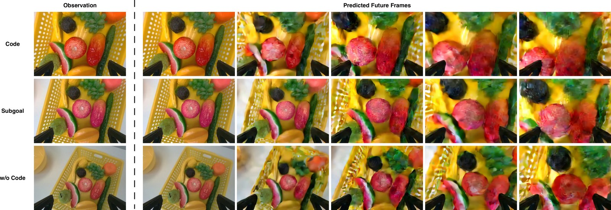
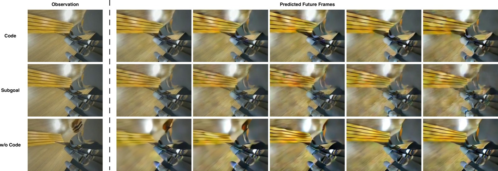
接觸密集的任務：DreamZero 在兩個任務贏 π0.5，code 再往上推
在 Replace Lightbulb 和 Deal Poker 上，DreamZero 贏過 π0.5（67.4 vs 63.8、37.1 vs 13.1）。論文的解讀是：預測未來狀態為動作提供了穩定的物理動態特徵。（WAM 並非處處佔優：WLA 在 Replace Lightbulb 輸 π0.5，56.0 vs 63.8。）AW-0 在此之上再加入技能程式的引導，讓技能層級的計畫與連續控制對齊。
真機混合執行：只測了一個任務
在 YAM 的 Fold and Stack Towels 上，同一個後訓練模型改用混合執行，rubric 分數從 84.4 升到 90.6。論文說，程式直接執行的那幾段，幫助模型分辨堆疊順序並讓動作更穩定。靈巧手沒有測：因為目前沒有給靈巧手用的 code-as-policy 系統。也要注意：論文沒有說明 YAM 真機上執行程式用的是哪一套感知與控制 primitive（標註用的宣告式 API 本身沒有實作），用的是同一個以宣告式標籤後訓練的模型；84.4→90.6 只有單一任務、沒有標準差，也不是在分佈偏移下量的。
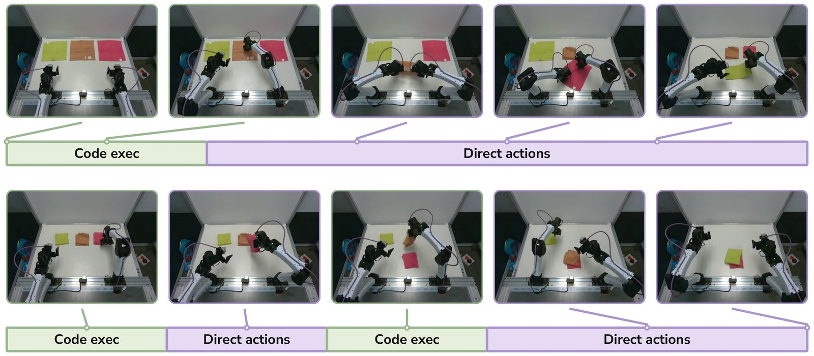
§8消融：code 到底貢獻了什麼
全部在真機 8 任務、同一套評估協定下做；四個問題
1 · code 該接在哪：順序比有沒有更重要
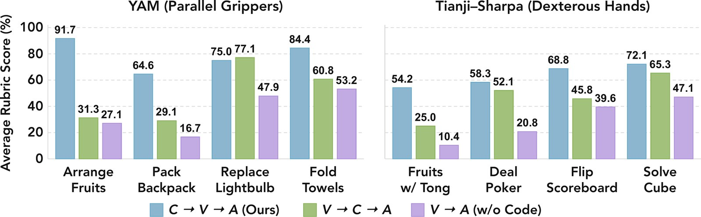
三個變體用同樣的預訓練資料、訓練預算與最佳化設定。平均分數（本站計算）：C→V→A 71.1、V→C→A 48.3、V→A 32.9。把 code 放在影片之後（V→C→A），比沒有 code 多 15.5 分；放在影片之前，又多 22.8 分。差距最大的是 Arrange Fruits：V→C→A 只有 31.3，C→V→A 有 91.7。本站推測：語言遵循可能得在想像未來之前就決定。V→C→A 裡 code 讀的是已經想像好的未來，難以回頭修正；論文的說法是這個順序讓 code 只能「對影片預測做推理，無法引導或修正它」。（附錄 G 那張「去拿蘋果」的畫面來自完全沒有 code 的版本，不是 V→C→A。）唯一的例外是 Replace Lightbulb，V→C→A 略高（77.1 vs 75.0）。
2 · code 專家該用什麼看圖：ViT 遠勝 VAE
| Code 專家的視覺條件 | Arrange Fruits | Pack Backpack | Replace Lightbulb | Fold Towels | Fruits w/ Tong | Deal Poker | Flip Scoreboard | Solve Cube | 平均 |
|---|---|---|---|---|---|---|---|---|---|
| 獨立 ViT（AW-0） | 91.7 | 64.6 | 75.0 | 84.4 | 54.2 | 58.3 | 68.8 | 72.1 | 71.1 |
| 沿用 Wan2.2 VAE 特徵 | 83.3 | 39.6 | 66.7 | 61.3 | 41.7 | 47.9 | 50.0 | 53.9 | 55.6 |
論文表 3。
8 個任務全部由 ViT 勝出，差距最大的是 Pack Backpack（64.6 vs 39.6，+25.0）與 Fold Towels（84.4 vs 61.3，+23.1）。論文特別點名 Pack Backpack 與 Solve Cube（72.1 vs 53.9），說這兩個任務需要細緻地辨認物體屬性與任務狀態。VAE 特徵是為了像素重建最佳化的，不擅長「該選哪個技能」這種語意區分。
3 · 計畫該寫成什麼：註解、技能、程式結構各有貢獻
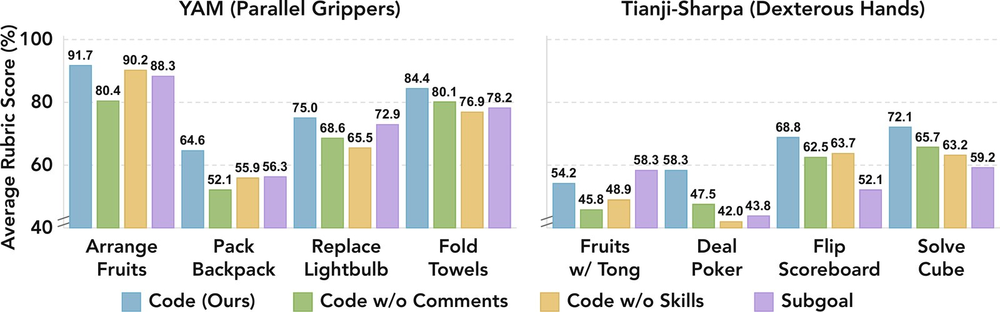
| 計畫表示 | 平均 | YAM | 靈巧手 | 相對完整程式 |
|---|---|---|---|---|
| 完整程式（註解＋技能＋結構） | 71.1 | 78.9 | 63.4 | — |
| 拿掉註解 | 62.8 | 70.3 | 55.4 | 8 任務全輸 |
| 拿掉技能呼叫（只剩 primitive） | 63.3 | 72.1 | 54.5 | 8 任務全輸；Deal Poker 58.3→42.0 |
| 自然語言子目標 | 63.6 | 73.9 | 53.4 | 輸 7 任務；Fruits w/ Tong 反勝 58.3 vs 54.2 |
平均與分平台平均為本站依原圖 15 的數值計算。
三個讀點：註解有用，說明性的語言把程式結構和任務意圖接起來；技能有用，拿掉技能後仍是結構化程式，分數卻照樣下滑，表示「可重用的抽象」本身有價值；程式勝過純文字，結構化的語意引導對動作來說是更好的條件。三個變體的分數都落在 63 分上下，比完整程式少約 8 分。
4 · 聯合去噪 vs 自迴歸：又快又好
| 任務 | 聯合去噪（AW-0） | 自迴歸 code |
|---|---|---|
| Arrange Fruits | 91.7 | 81.3 |
| Pack Backpack | 64.6 | 62.5 |
| Replace Lightbulb | 75.0 | 79.2 |
| Fold Towels | 84.4 | 53.2 |
| Fruits w/ Tong | 54.2 | 20.8 |
| Deal Poker | 58.3 | 44.1 |
| Flip Scoreboard | 68.8 | 39.3 |
| Solve Cube | 72.1 | 55.8 |
| 平均 | 71.1 | 54.5 |
論文表 4。
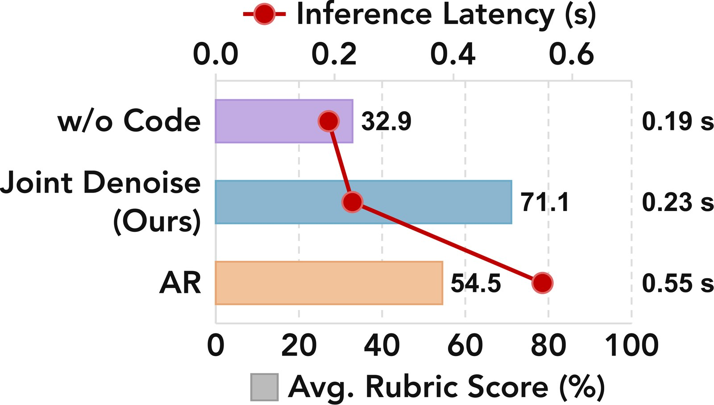
聯合去噪在 8 個任務中贏 7 個，速度是自迴歸的 2.39 倍（0.23 vs 0.55 s）。跟完全不帶 code 的版本比，只多 0.04 s（21.1%），8 個任務卻全部進步。每次推理產出 32 步動作，以 30 Hz 資料計約 1.07 秒（本站推算）；論文沒有報告部署時的控制頻率、推理是否與執行重疊，延遲是在 RTX 5090 上量的。
生成的程式品質：能 parse，不見得對
| TF loss | TF 準確率 | 接地落差 | 可解析率 | 實體 F1 | Primitive F1 | 技能呼叫率 |
|---|---|---|---|---|---|---|
| 0.535 | 89.7% | 1.774 | 87.5% | 0.534 | 0.365 | 29.2% |
附錄 F 表 10：預訓練 code 專家在預訓練驗證集上的表現（尚未下游微調）。TF＝teacher forcing；接地落差（grounding gap，看程式是否真的對應到畫面）＝把視覺觀測在樣本間打亂後，code loss 增加多少；實體 F1＝生成程式中的引號字串（物件名稱等）與參考程式的重疊；Primitive F1＝呼叫的 robot API 名稱的重疊；技能呼叫率＝含技能呼叫（以 robot 為第一個參數的函式）的程式比例。
把影像打亂後 code loss 增加 1.774，代表程式確實「看了圖才寫」。但實體 F1 只有 0.534、primitive F1 只有 0.365：語法有效（87.5%）和語意正確是兩回事。論文也附上一好一壞兩個例子：
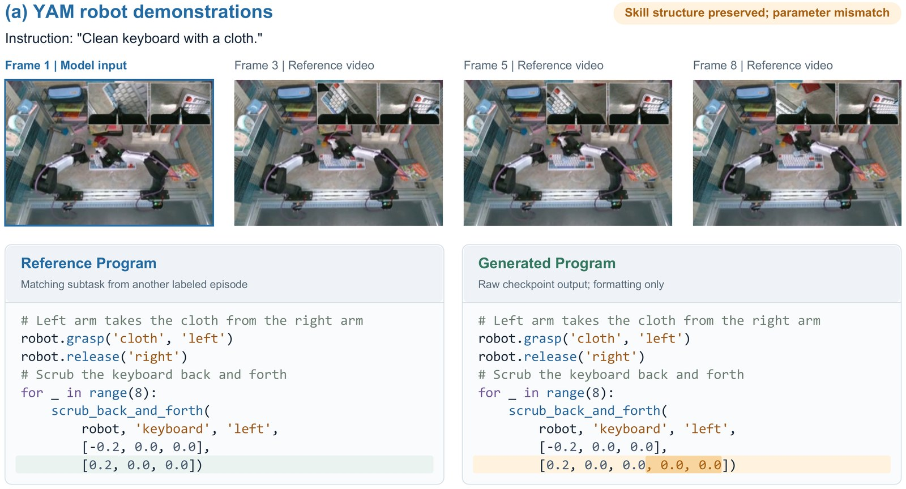
scrub_back_and_forth 的結構都對，但位移參數多了兩個元素：技能選對、參數錯，直接執行就會失敗。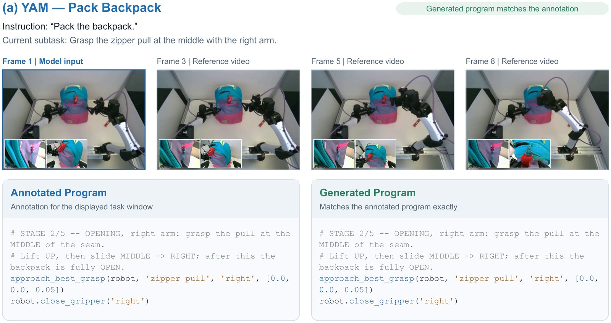
§9查證筆記與限制
論文自己認的三條、失敗案例六類，以及我們對回原文後補充的幾條
論文自列（附錄 L）：
- 程式接地與技能覆蓋。計畫品質受限於自動標註的準確度和技能庫的覆蓋範圍；技能選對但參數錯的情況存在，語法有效不保證能正確執行。未來可以用執行回饋改善接地、擴充技能。
- 預測的穩健性與混合執行。結構化計畫沒有消除對視覺分佈偏移的敏感；混合執行改善了 Random，卻拉低了 Clean。仲裁只看有效性、不估計優勢，應該學一個依執行可靠度與預期進度來仲裁的機制。
- 離持續學習還遠。真機混合執行只在 YAM 上做，因為靈巧手沒有 code-as-policy 系統；整個系統也不會從自己的互動中線上學習。
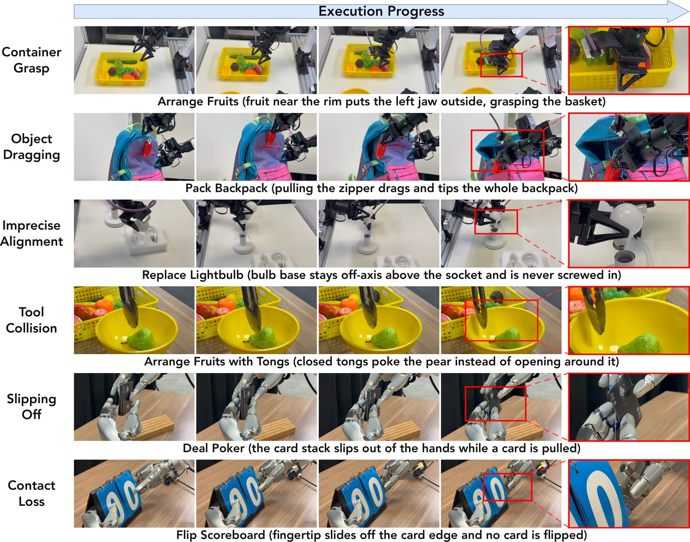
（本站觀察）六類全是細粒度的接觸與相對位姿，與 LaST-R1 的真機失敗清單一致。論文沒有附上失敗回合生成的程式，無法確認是「計畫寫對、手沒跟上」；容器抓取那一例甚至可能是抓取選擇本身就錯了。
我們對回原文後補充的：
- 摘要說「穩健性提升」，要打折讀。模擬 Random 設定下，預設模式（20.6）輸 π0.5（27.7）；混合模式 29.2 只贏 1.5 個百分點，而且用的是另一套訓練示範（§4）。換成保留率，最抗隨機化的反而是 DreamZero 和 π0.5（自繪圖 G）。真機上沒有做分佈偏移測試：混合執行的 84.4→90.6 是在同樣條件下量的；論文在真機講的「穩健」是指接觸密集任務的技能執行（§7 的 Replace Lightbulb、Deal Poker 分數），加上 Deal Poker 一組定性的未來畫面（原圖 12；原圖 11 談的是語言遵循）。
- 跟基線比，預訓練資料不對等。AW-0 預訓練用了 1,919 小時的 YAM 機器人資料，跟 4 個 YAM 評估任務是同一種平台；基線則各自從通用權重出發。論文內部的 V→A 消融（同樣預訓練、拿掉整個 code 專家，含 ViT 與語言骨幹，32.9 分）說明光靠資料拿不到這個領先，這是比較有力的反證。但「AW-0 對 π0.5」這組數字本身，仍混合了資料、架構與 code 三個因素。各方法的微調預算也不同（π0.5 50 epoch、DreamZero 10、AW-0 20）。另外，約 994 小時人類第一人稱影片的手部動作被重定向成每手 22 維靈巧手關節目標，與 Tianji–Sharpa 共用同一組關節欄位（自繪圖 F），而 AW-0 領先最多的正是靈巧手那一側。V→A 在靈巧手只有 29.5，說明光有這份資料不夠；但基線的預訓練是否含同格式的靈巧手資料，論文沒有交代。
- 沒有不確定性估計。真機有 3 個種子 × 16 次，卻沒有報告標準差或信賴區間；分數是加總式 rubric 的部分分數，不是成功率。
- 幾個設計沒有消融。雜訊重取樣（α=0.5、重要性權重）、記憶快取（K、p 沒給數值）、信心排序解碼，論文都沒有對照實驗。標註管線的快取命中率、實際省下多少次 VLM 呼叫、標註成本，正文也都沒有報告。
- 未來畫面比較只是定性單例。原圖 11、12 每個模型各一組，論文自己註明初始觀測「相似但不相同」。
- 一處小矛盾。Deal Poker 的失敗案例，內文說是右手把牌疊交給左手時左手沒接穩；原圖 19 的圖說則寫成「抽牌時牌疊滑出手」。
- 整條 code 監督訊號都是 LLM 產的。AI 使用聲明：標註用 Gemini 3.1 Pro 與 Claude Opus 4.8；模擬混合模式的示範程式由 Claude Opus 4.8 撰寫；語言潤飾與部分圖表準備用 GPT-6 Astra。程式標籤的上限就是這兩個前沿模型的看圖寫碼能力，論文的第一條限制也承認這一點。
- 開源狀態（2026-10-27 查）。GitHub ZhuoyangLiu2005/agentic-wam（BSD-2-Clause，2026-10-04 建立，121 stars、6 forks）號稱附上含預訓練在內的完整程式碼、VLM 標註管線、兩套凍結技能庫、RoboTwin 混合評估，還附了 Claude Code skills（setup、標註、訓練的 runbook）。Hugging Face 有預訓練權重與 RoboTwin 後訓練權重。預訓練語料沒有釋出；預訓練的起點 Cosmos-Predict2.5-2B 也不在這次發布內，要另外從 NVIDIA 的公開版本取得。README 寫「程式從不被 policy 執行」，指的是預設模式。
§10重點筆記：對狀態偵測專案的啟示
本站觀點，非原文：「固定鏡頭偵測食材狀態、gate 食譜 FSM」的專案能從這篇抄什麼
AW-0 把「計畫」從 policy 外面的控制器，變成 policy 裡面的一條生成模態。程式不必被執行，也能當很好的條件：在 AW-0 測過的四種計畫表示裡最好，比沒有計畫好上一大截；而且計畫與影片、動作平行生成時，推理延遲只多 0.04 s（+21%）。代價主要在訓練端：多一個 code 專家，以及一條 LLM 標註管線（成本論文沒有報告）。對烹飪狀態偵測專案（固定相機、偵測器約 1 Hz、食譜 FSM 被事件觸發、手上只有數十段錄影）來說，可以直接搬的是三樣東西：結構化的「目前步驟」當條件、用感測事件驗證 LLM 寫的標籤、以「能不能跑」以外的標準來仲裁腳本與學習模型。不能搬的是規模：2,913 小時預訓練、48 張 H100。
- 把 FSM 的目前步驟寫成「程式」餵給偵測器，不要寫成一句話。§8 的標籤消融在 AW-0 裡量到的是：完整程式 71.1、純文字子目標 63.6、拿掉註解 62.8。不過那是「模型自己生成的計畫」去條件化動作生成；換成「FSM 給定的步驟」去條件化偵測器，效果大小要自己驗證。對熟度偵測器來說，條件可以是
wait_until(egg, 'white_set', region='edge') # 蛋白邊緣轉白、中心仍透明，而不只是「等蛋熟」。動詞、物件、參數加上一句說明性註解，各自有貢獻。這與本站狀態偵測選型指南的「VLM 問答適合語意」互補：語意由條件提供，偵測器專心看畫面。 - 單張畫面看不出進度，就把「已經走過的步驟」也餵進去。AW-0 的記憶快取就是為「單張畫面看不出進度」而設計的（毛巾的例子是本站舉的；論文沒有對記憶快取做消融，也沒給 K、p）。訓練時以機率 p 把歷史換成模型自己的預測，用意是讓模型不被自己的錯誤帶偏。對應到 FSM：偵測器的輸入除了影像，再加上 FSM 已確認的步驟序列；訓練時偶爾放進錯誤的歷史，模擬「FSM 前一步判錯」的情況，免得上線第一次誤判就一路錯下去。
- 標 35 段錄影，可以照抄「一個寫、一個審、感測器當裁判」。AW-0 在 YAM 上把夾爪感測器的開合事件當權威答案，LLM 寫的程式必須依序重現這些事件才算數；事件簽章一樣就重用快取。煮食場景的權威事件來源：爐火開關、熱像儀上鍋面溫度跨越閾值、鍋鏟接觸鍋面的時間點。讓 VLM 寫步驟標籤，再用這些事件序列自動驗證，不一致才退回重寫或交給人看。人力只花在對不上的片段。
- 人類技能庫的 27 個技能裡，至少六、七個可以直接當廚房動詞。
stir_contents、pour_into_target、scoop_and_carry、turn_over_object、unscrew_cap、wipe_surface_back_and_forth。做料理機器人的技能詞彙表時，可以直接沿用這些名稱與「接觸契約」的寫法：每個技能宣告自己的開合事件。收錄規則也值得抄：至少兩道菜都用得到、是一個招式而不是一份食譜、與既有技能不重複。 - 腳本與學習模型的仲裁，要估「優勢」，不只看「能跑」。RoboTwin 的結果值得警惕：混合模式只要程式有效就放行，Clean 從 80.8 掉到 63.1。論文歸因於 primitive 的失敗模式，以及只看有效性的仲裁；不過這組比較同時換了訓練示範，沒有分離出仲裁本身的效果。另一方面，在 Random 下，排方塊、A 放到 B 這類結構化取放，混合模式又比預設模式高 50 分以上（同樣帶著換了訓練示範的前提）。對應到廚房：倒醬汁、放鍋蓋這類結構化動作交給腳本；翻蛋、攪拌這類跟形變與接觸打交道的動作交給學習模型。仲裁條件除了「前置條件成立」，還應該加上「這類步驟過去用腳本的成功率」。
- 判斷狀態要用語意編碼器，不要用重建用的 latent。ViT 71.1 對 VAE 55.6，8 個任務全勝。熟度判斷是語意區分，應該從 DINO、SigLIP 這類特徵出發，而不是影片生成模型的 VAE latent（AW-0 測的是 Qwen3-VL-2B 視覺塔這種語言對齊特徵，用途是選技能；DINO 這類純自監督特徵 AW-0 沒有測）。即使整套系統裡已經有一個影片模型，「判斷」那一路也值得另接一個語意視覺塔。
跟本站另外幾篇對照
- ASPIRE 讓 coding agent 在 policy 外面寫程式、跑程式、修程式，並把修好的存成技能。AW-0 把同一種程式搬進 policy 裡面當條件。兩篇有作者重疊（ASPIRE 一作 Runyu Lu 也列名 AW-0），AW-0 模擬混合模式的訓練示範，就是由 Claude Opus 4.8 依 ASPIRE 的 agentic 框架寫 CaP 程式、執行收集來的（預設模式的示範則用 RoboTwin 原生運動規劃器）。
- Robot-Use Agents（Isola）談 LLM 把機器人當工具用，程式也在 policy 外。AW-0 的混合模式則是兩種路線的交界：程式能跑就跑，跑不了就交回學習模型。
- LaST-R1 主張文字 CoT 太慢、離散化會丟資訊，所以把推理搬進連續潛空間。AW-0 給了另一個答案：離散的推理 token（程式）只要和動作平行地一起去噪，代價就只有 0.04 s；真正慢又差的是自迴歸（0.55 s、54.5 分）。兩篇合起來看，至少在離散 token 這一邊，延遲主要取決於生成方式（平行去噪 vs 自迴歸）；離散與連續之間的直接比較，兩篇都沒有做。
- Retriever 的多時鐘觀點：AW-0 每次推理 0.23 s、產出約 1 秒的動作塊，重規劃點之間由動作塊或程式接管。混合模式的仲裁器正好就是 Retriever 說的那種「在被決定的時刻切換執行者」的監控器。